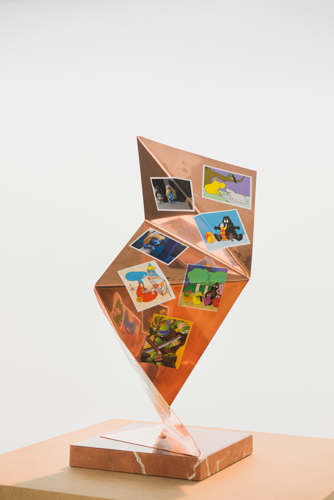

Milk, Language, Metaphysics and Death, 2010. Dimensions Variable.
Milk, Language, Metaphysics and Death, 2010. Dimensions Variable.
Kevin Boothe: I wanted to start off by talking to you about language, something that seems to be a re-occurring theme in your work. Some of your earlier pieces, especially those within the book series, dealt with language in a very literal way. How does language inform your practice and what is its role in some of your more recent sculptures?
Lina Viste Grønli: I have a slightly obsessive, if not idiosyncratic, relationship to language. Language informs my work completely. The title is often the important part of the piece, and the physical shape or form can feel like merely a means to an end. In works like Fig on Roles and Values (a fresh fig on a book titled Roles and Values ), or The Idiot, The Stud and The Brothers Karamazov or Phil Collins in Eurythmics — I could go on and on —, the title informs the work. On the other hand I am probably just as intensely preoccupied with formal aspects of Sculpture and the juxtaposing of objects so ultimately the work also has a very physical presence. I can be bit of a reclusive bookworm, and have often enjoyed reading or looking at art in books more than seeing it in real life. I think probably the best pieces of (certainly conceptual) art I know of I still haven’t actually seen.
Tinging at Kunsthall Stavanger, 2013."> Installation view from Tinging at Kunsthall Stavanger, 2013.But getting back to language: I think that although I have a fairly comfortable relationship to the English language — I started reading English-language novels from the age of 12 — it is still my second language, and I think that this slight distance from it probably makes the relationship a more abstract and moldable thing; something that can be studied, pulled apart and reassembled. I came up with this word Albaphet, and it totally blew my mind. Although that probably just makes me a nerd.
Tell us a little more about Albaphet
Having been preoccupied with semantics and phenomenology and the materialization of language for a long time, I had paused with the word ‘alphabet’. What do you do with a word that represents the very structure of language? I think it’s quite a strong representation in and of itself, and for a long time I just lived with it on my studio wall, but then as I got deeper into absurd and abstract writing (Sentences in English and Other Writings the thing that was messing with my head was how this word which is supposed to represent a systemized set of order for using language could be spelled wrongly. The way I used it in the end was as a title of the show, The Albaphet and Other Writings, at Wiels Project Room in Brussels. A kind of ode to doing ‘other’ and ‘wrong’ things.
 R for Rudeness, 2009. Oak, Paint. 41 cm x 7 cm, x 30 cm
R for Rudeness, 2009. Oak, Paint. 41 cm x 7 cm, x 30 cm
Another idea in your work I found very interesting is that of translation. In your piece Practicing Haydn you collaborated with composer Peter Child and concert pianist Elaine Chew to transcribe and then perform Chew’s practice session of Haydn’s Piano Sonota in E Flat. How did this collaboration come about, and what were you hoping to explore through this piece?
This relates to what I was talking about in having the luxury of an abstract second language. I think seeing the absurd and surreal in something becomes easier when seen from a distance, and this lightness in relation to language and vocabulary can be transferred to other things, like music. My boyfriend, who is a composer and professor of music says I have a natural musical mind, but I couldn’t read music if my life depended on it! This complete ignorance in a way makes for a more playful attitude towards music. So, for example, without knowing what an immense undertaking and mere impossibility it would be to actually realize this idea I had I blurted it out to him one night: we had just been to the Berlin Philharmonic and I did my usual thing of expressing how much I liked the warming-up “performance” (I really do appreciate the radical, chaotic and somewhat brutalist symphony of the warming up the orchestra does before a concert), I said could we not somehow capture this symphonic mess and make it into a performable score?
Composer Peter Child's early sketches/transcripts of the recordingAnyway, this late night rambling turned into the idea of a smaller more doable version namely one single piano player practicing a music piece for the first time, then have that recorded and transcribed exactly as is into a new performable score. Thanks to Elaine Chew and Peter Child’s impeccable talents we now have that score. I just had the loony idea. The nerve-wrecking part was to actually execute it, because there was no way it would sound anything like what I had imagined. My trick was to go with whatever came out of it — in my view there was no bad or good score, no beautiful or ugly sound, just the strength of the idea. I think for the composer and performer it was a lot more challenging to see and hear what came out at the end.
 Elaine Chew performing the piece for the first time at Kunsthall Stavanger
Elaine Chew performing the piece for the first time at Kunsthall Stavanger
Practicing Haydn also brings up questions of performance. While this piece dealt with performance in a very literal manner, I think there is a certain perfomativity to your sculptural installations as well. The presentation of the multiple sculptures on larger plinths is not unlike actors on a stage. How does the concept of performance influence your practice?
Yes, in fact, a long time ago somebody coined my practice as engaging in “Performative Sculpture,” which I think related more to the idea that the sculpture or object contained something of the act of making it. That the execution and ideas around the making of it were still a part of it somehow.
Tinging at Kunsthall Stavanger, 2013."> Installation view from Tinging at Kunsthall Stavanger, 2013.My first solo show after I graduated from Art School was actually called Finished and was just this endless semantic meta-loop of sculptures being made and finished and displayed. But I think you are talking about something else maybe, about the sculptures themselves being performers on a stage? I grew up in a theater (my father is an actor) so I suppose there is a bit of the theatrical in me. I also do think of exhibiting as a form of performance or being on stage. You are putting yourself out there for people to see. For a long time this would be a major part of my relationship to exhibition making. I could never look at an exhibition opportunity as just a space to exhibit my work. Every aspect of it, the invitation, the space and its history, the act of exhibiting, the public and the presentation would all be a part of the planning of the exhibition. I still do this to some extent, and am somewhat troubled by it, but it’s getting better.
Your recent exhibition (Tinging, at Stavanger Kunsthall, in Norway) borrows its title from Heidegger’s exploration of “things.” A lot of your work seems to stem from the pairing of seemingly dissonant objects or materials which, when combined, create a new sort of vocabulary. How does the concept of “Thinging” relate to your specific material choices?
I had scribbled down “The Thing Things” in a notebook from old academy lectures about Heidegger and it really stuck. When I was asked by Hanne Mugaas (the new director of Stavanger Kunsthall) to do a survey show of my work I thought it could be a fitting title for an exhibition that included new and old works. It felt like a good common denominator for my oeuvre so far.
Classics, 2013. Framed found image, various project packaging. 40 cm x 50 cm x 12 cmI suppose Heidegger was talking about things and how they attract one another. There is an environmental approach to this that speaks of our consumerist culture of things attracting more things resulting in an abundance of things in the world. My literal and slightly skewed mind actually saw them attaching to one another like magnets. This is something I had been doing for quite some time already with works like Square the Circle (2009) for example, which was a coconut attached to a book about Cubism. I had just made a series of sculptures where these seemingly modernist or abstract copper and brass sculptures were covered in stickers. It created an oddly eerie feeling for many people. Like some line had been crossed — but in a good way. I was happy because it felt like I had made something modern. Something new.
 Thinging IV 2013. Marble, Copper, stickers, 20 cm x 20 cm x 49 cmTo finish, I wanted to talk to you about the idea of potential within an art object. What really struck me about your series Thinging is how seemingly static “traditional art objects” (metal sculptures) are repurposed as something new through the application of stickers. The pieces take on this appearance of suddenly being in flux. How do you see the concept of flux being applied to a larger sculptural practice?
I’m glad you said that because I think that is something that I have a deep interest, although not always succeed, in doing. I really dislike being called a traditionalist or a nostalgic, I really want to move forward. I think I am a Futurist at heart, but at the same time I love these silly old bronze sculptures. I love them, but I don’t really see a place for them in a contemporary art practice.
Installation view from Tinging at Kunsthall Stavanger, 2013I think the Thinging sculptures was my way out of this jam and it felt like such a liberating thing. To work relatively traditionally with forms and materials and then to kind of transform them into something new in an instant.
All images appear courtesy the artist, Gaudel de Stampa and Christian Andersen. Images of “Tinging” appear courtesy Kunsthall Stavanger. Photos by Erik Sæter Jørgensen.